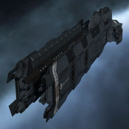

Naga

Тип корабля: Линейный крейсер
Государство/Организация: Caldari
Примерная стоимость: 62.100.000 ISK
Описание
Проект линейного крейсера типа «Нага» был разработан калдарской корпоративной полицией (CPF) в 109 году по юлайскому летоисчислению. Новый корабль предназначался для борьбы с силами организации «Гуристас»; создатели крейсера решили пренебречь традиционной для калдарских кораблей защищенностью, променяв ее на возможность установки гибридных орудий большого калибра. Руководство корпорации «Хайасьода» от реализации проекта отказалось, посчитав его чересчур специализированным.
Следующие четыре года он провел в архивах, показавшись на публике лишь однажды — в одной из серий популярного галлентского телесериала СPF Blue». В 113 году калдарское адмиралтейство объявило о проведении конкурса на создание нового поколения линейных крейсеров; первыми жертвами победившей в нем «Наги» стали корпорации «Каалакиота» и «Ишукон», предложения которых были в пух и прах разбиты расторопными менеджерами «Хайасьоды».
Линейный крейсер типа «Нага» эффективен в любых ситуациях, требующих маневренности в сочетании с огневой мощью.
Характеристики
Корпус
Запас прочности корпуса: 1.755 ед.
Вместимость грузового отсека: 575 м^3
Объем отсека для дронов: -
Пропускная способность канала телеуправления: -
Масса: 15.000.000 кг
Занимает объем: 252.000,0 м^3 (15.000,0 м^3 в разобранном виде)
Влияние инертности конструкции: 0,525x
Сопротивление корпуса ЭМ-урону: 33 %
Сопротивление корпуса термальному урону: 33 %
Сопротивление корпуса кинетическому урону: 33 %
Сопротивление корпуса фугасному урону: 33 %
Броня
Запас прочности брони: 1.575 ед.
Сопротивление брони ЭМ-урону: 50 %
Сопротивление брони термальному урону: 45 %
Сопротивление брони кинетическому урону: 25 %
Сопротивление брони фугасному урону: 10 %
Щит
Запас прочности щита: 2.160 ед.
Влияние на время регенерации щитов: 23 минут и 20 секунд
Сопротивление щита ЭМ-урону: 0 %
Сопротивление щита термальному урону: 20 %
Сопротивление щита кинетическому урону: 40 %
Сопротивление щита фугасному урону: 50 %
Сопротивление средствам РЭП
Сопротивление накопителя нейтрализирующему воздействию: 0 %
Сопротивление воздействию генератору стазис-поля: 0 %
Сопротивление воздействию помех на наводку вооружения: 0 %
Накопитель энергии
Емкость накопителя: 2.900,0 ГДж
Время востановления заряда: 12 минут и 5 секунд
Целеуказания
Максимальная дальность захвата цели: 75 км
Максимальное количество захваченных целей: 8
Радиус сигнатуры: 215 м
Разрешающая способность систем захвата цели: 200 мм
Эффективность радарной системы: -
Эффективность магнитнометрической системы: -
Эффективность гравиметрической системы: 21 ед.
Эффективность ладарной системы: -
Двигательная установка
Максимальная скорость: 195 м/с
Скорость в варп-режиме: 3,5 а.е./с.
Служба оснащения
Мощность ЦПУ: 425,0 Тф
Мощность реактора: 875 МВт
Калибровка: 400 ед.
Точки монтажа орудийных установок: 8
Точки монтажа пусковых установок: -
Разъемы большой мощности: 8
Разъемы средней мощности: 6
Разъемы малой мощности: 3
Разъемы под установку тюнинг-модулей: 3